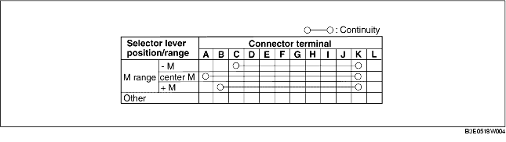

1. Remove the battery cover. (See BATTERY REMOVAL/INSTALLATION [ZJ, Z6].) (See BATTERY REMOVAL/INSTALLATION [LF].)
2. Disconnect the negative battery cable.
3. Remove the console. (See CONSOLE REMOVAL/INSTALLATION.)
4. Disconnect the selector lever component connector.
5. Verify that the continuity is as indicated in the table.
